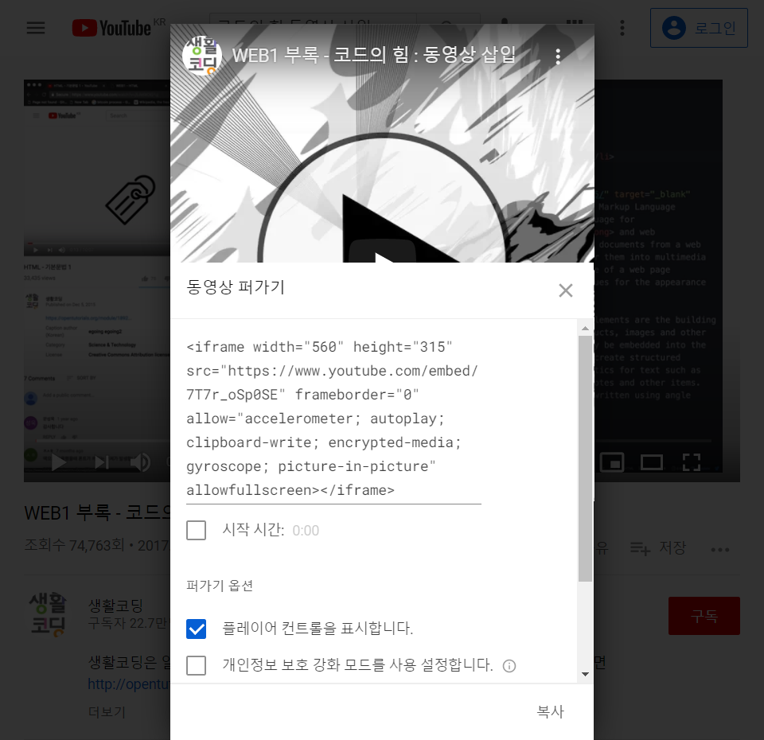

생활코딩에서 제공한 주소를 사용
사람이 하는 일
= 원인, 코드(부호, 신호), 소스(원천), 컴퓨터 언어(약속)
기계가 하는 일
= 결과, 애플리케이션, 앱, 응용프로그램, 프로그램
= 결과 웹페이지, 웹페이지가 모이면 웹사이트, 기능이 많으면 웹애플리케이션 (in 웹)
->원인인 코드를 통해 결과를 만드는 것이 코딩을 이해하는 핵심
웹페이지를 만드는 코드 : HTML
HTML은
1. 쉽다 : 언어의 문법을 다 배우는데 10분도 걸리지 않음
2. 중요하다 : 인류가 생산하는 거의 모든 디지털 정보가 담기는 그릇
3. 저작권이 없다 : 똑같은 웹페이지를 여러 웹브라우저에서 볼 수 있음, 느리지만 오래감
<@>어쩌구</@>같은 형식(닫히는 건 종류에 따라 없을 수도)으로 쓰는 게 태그, 앞에 있는 태그를 열리는 태그, 뒤에 있는 태그는 닫히는 태그라고 부르기도 함. 중첩 사용도 가능하다.
종류는 더 있으나 일단은 언더바 강조 등등
@자리에 쓰고 싶은 태그쓰면 된다(윗줄 쓰려고 이스케이프 문자 검색해봤다).
아무것도 모르고 자바 GUI 공부할 때 br 쓴 적 있었는데, 그 의미를 이제야 알았다.
엔터 같은 br, 단락 같은 p
h1 태그 : the most important heading, 즉 제목
h6 태그 : the least important heading, 같은 제목이지만 많이 작음
많이 쓰는 태그 찾기https://advancedwebranking.com/html/
닫지 않는 태그 : 무엇인가를 설명하지 않는 태그들
ex) img, input, br, hr, meta 등
태그를 사용하여 시각적인 꾸밈보다는 정보의 목적을 보여주는 것이 중요
style에 들어가는 margin 순서
4개 쓸 경우 : 위 오른쪽 아래 왼쪽
3개 쓸 경우 : 위 (오른쪽, 왼쪽) 아래
2개 쓸 경우 : (위, 아래) (오른쪽, 왼쪽)
1개 쓸 경우 : (위, 오른쪽, 아래, 왼쪽)
style을 사용하는 것은 CSS
주소를 안다면 사진도 넣을 수 있다. 인터넷에 올라와 있는 사진으로 확인해봤다.
생활코딩에서 제공한 주소를 사용
src뒤에 프로젝트 폴더 내 사진의 "이름.확장자"를 넣어 컴퓨터 내 이미지 파일 업로드 가능
위의 여우는 오소프 수업에서 사용하던 귀여운 친구다.
속성
태그의 심화된 문법, 태그의 이름만으로는 정보가 부족할 때 사용
img 태그에 추가되는 src, width도 속성
부모 - 자식
태그 간의 관계를 나타내는 표현
고정된 관계의 태그들
* ul/ol 태그 - li 태그
서로가 있어야 의미 있는 관계. ul은 순서X, ol은 순서O
문서의 구조
- title 태그
웹페이지의 제목 설정
페이지는 html로 title을 설정했다
검색엔진이 웹페이지를 분석할 때 가장 중요하게 생각하는 태그
- meta 태그
문서 그 자체를 설명하는 태그
웹 사이트의 검색 최적화와 관련된 가장 중요한 태그
위의 두 태그는 본문이 아님, 본문을 설명함
본문은 body 태그를, 본문을 설명하는 태그는 head 태그를 사용함
그리고 이 body 태그와 head 태그를 감싸는 태그가 html 태그
이 웹페이지가 HTML로서 만들어졌다는 것을 표현하기 위해 <!doctype html> 코드 추가
이 것이 전세계의 웹페이지가 가지고 있는 공통적인 구조
링크
HTML의 약자 HyperText Markup Language의 HyperText가 뜻하는 태그
html 태그는 anchor의 약자 a를 사용
href는 HyperText Reference의 약자
target="_blank" : 링크 클릭시 새창에서 페이지가 열리게 하는 속성
title="~" : 링크가 담고 있는 내용을 툴팁으로 보여주는 기능
웹사이트
링크를 통해 서로 결합되어 있는 웹페이지들의 그룹
현재 페이지도 웹사이트의 일부, 아직 하나밖에 연결하지 않았지만...(1주차 기준)
웹은 인터넷의 일부
인터넷이 동작하기 위해 필요한 최소 컴퓨터의 수 : 2
인터넷으로 연결된 2대의 컴퓨터에 2개의 프로그램을 개발하여 각각 웹브라우저와 웹서버라는 이름을 붙이고 웹서버가 설치된 컴퓨터에는 info.cern.ch라는 주소를 부여한 뒤 이 컴퓨터 속에 index.html이라는 파일을 저장
웹브라우저가 설치된 컴퓨터의 주소창에 http://info.cern.ch/index.html이라는 주소를 입력하면?
> 웹브라우저가 설치된 컴퓨터는 인터넷을 통해 "index.html이라는 파일의 코드를 달라"는 내용의 전기적인 신호를 info.cern.ch라는 주소의 컴퓨터에게 보냄
> info.cern.ch에 설치된 웹서버가 index.html이라는 파일을 찾아 읽고 전기적인 신호로 바꿔 웹브라우저가 설치된 컴퓨터에 신호를 보냄
> 웹브라우저가 설치된 컴퓨터에 index.html 파일의 내용(코드)가 도착하고, 웹브라우저는 이 코드를 읽어 웹페이지를 화면에 출력
이때 정보를 요청하는 컴퓨터를 클라이언트 컴퓨터, 응답하는 컴퓨터를 서버 컴퓨터라고 부르기도 함
웹브라우저를 다른 말로는 웹 클라이언트라고 함, 웹서버는 서버 컴퓨터에서 동작하므로 웹서버라고 함
웹서버를 직접 설치할 수도 있고, 웹서버를 제공해주는 업체 즉 웹호스팅 업체를 이용할 수도 있음
웹서버를 운영하려면
1. 컴퓨터가 있어야함
2. 그 컴퓨터가 항상 켜져 있어야함
3. 웹서버라는 프로그램을 배워서 설치해야함
4. 외부로 정보를 송신할 수 있게 설정해야함
5. 즉 어려움
웹브라우저가 웹서버에 접속하려면 웹서버가 설치된 컴퓨터의 주소, 즉 ip주소를 알아야함
IPv4라고 되어 있는 주소가 바로 컴퓨터의 ip주소. 웹서버를 설치하면 http://ip주소/index.html하면 접속이 가능함(물론 나는 안 됨)
해당 웹서버의 프로그램에 다른 컴퓨터로 접근하려면 지금은 같은 네트워크에 접속되어있어야만 가능
웹호스팅
인터넷에 연결된 컴퓨터 하나하나를 호스트라고 하고 이 컴퓨터를 빌려주는 게 호스팅
즉 웹호스팅은 웹서버를 전문적으로 빌려주는 비즈니스
github에 파일을 업로드하고 pages 기능을 활성화하면 github의 서버 컴퓨터에 웹서버가 켜져서 우리에게 웹서버의 주소를 알려줌. 이 웹서버의 주소를 방문자에게 알려주면 방문자는 github의 컴퓨터에 설치된 웹서버에 접속하게 됨
정적인 html은 웹브라우저가 해석하기 때문에 서버쪽에서 해줄 일이 많지 않아 무료인 경우가 많고, 동적인 php, python, ruby, java 등은 대체로 비용을 냄
https://arm-b.github.io/FrontendStudy/
파일 이름 index.html로 해놓은 것이 열리는 것 같은데 그 이유는 아직 모른다. 난 바보닉가...
부록 #동영상 삽입
비슷한 내용이라 유튜브 외 다른 사이트 것도 데려올 수 있다
유튜브에서 공유 버튼을 누르고 퍼가기를 누르면 다음과 같은 화면이 뜬다

퍼가기~embed~이전에는 source~코드
iframe 태그가 동영상에 사용되는 것을 알 수 있음
아래는 동영상
부록 #댓글 기능
https://disqus.com
백엔드 기능을 알아야 댓글 기능 직접 구현 가능
데이터베이스까지 구현... 정말 많은 게 필요
스팸 차단 기능 같은 것들도 필요~ 이미지~ 서비스 연동~ 등등...
남들이 만든 댓글을 웹사이트에 추가 -> DISQUS나 LiveRe서비스
DISQUS에 웹사이트를 추가(create site)하고 시작
universal cord라는 버튼을 클릭하면 긴 코드가 나옴 그게 html 코드라 갖다 쓰면 됨
주소가 file로 시작하면 안 됨. 웹서버를 통해 열어야함. 안 그러면 보안상의 이유로 안 열림
localhost(=127.0.0.1)/index.html하면 나온다고는 하나, 웹서버를 안 깔아서 확인은 못함.
부록 #채팅 기능
https://www.tawk.to
이것도 웹서버 깔아야 가능. 채팅을 넣으면 웹서버 측에서 채팅이 왔다는 알림이 뜸
부록 #웹페이지 분석기
https://analytics.google.com
몇 명이 방문했는지, 어떤 경로로 웹사이트에 왔는지, 어떤 경로로 이동하고 있는지, 어떤 환경에서 웹사이트를 탐색하고 있는지를 제공
모바일 앱, 웹페이지 등 원하는 걸로 변경
데이터가 없으면 아무 것도 할 수 없다. 그러므로 우선 데이터를 쌓고 분석이 필요하면 분석을 해라